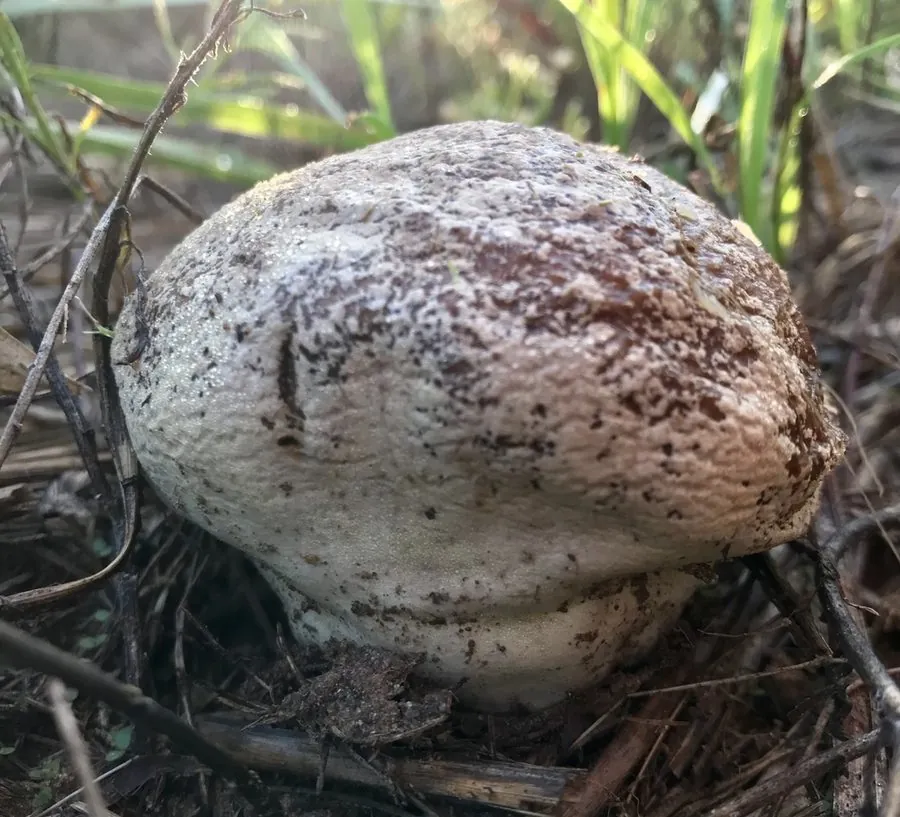

真菌 · 真菌界
头状秃马勃 Calvatia craniiformis

头状秃马勃的子实体形如倒扣的头颅，上部膨大、下部收窄成柄状，成熟后内部化为橄榄褐色孢子粉，幼时可食、老熟不可食。
- 分类
- 门担子菌门纲伞菌纲目伞菌目科蘑菇科属马勃属
- 栖息环境
- 草地、林缘、疏林下与农田边缘的土壤，夏秋季出菇
- 地理分布
- 中国南北各地及东亚、北美等地，温带与亚热带常见
- 保护级别
- 暂无评估（IUCN 未评估，中国未列入重点保护名录）
物种志
头状秃马勃是担子菌门蘑菇科的大型马勃，子实体高 8–20 cm，直径 6–15 cm，上部膨大呈球形或扁球形，下部收窄成粗壮的柄状不育基部，整体形似倒扣的头颅，因此得名“头状”。幼时表面黄白色至淡黄褐色，光滑或有不明显的细纹，内部菌肉白色、疏松；成熟后上部变为橄榄褐色至褐色的粉末状孢子团，外包被逐渐剥落，孢子随风散出。
头状秃马勃生于草地、林缘、疏林下和农田边缘，夏秋季出菇，在中国南北各地都有分布，是常见的大型马勃。幼嫩时菌肉白色、质地松软，可切片炒食或做汤，但必须切开确认内部均匀洁白，若已发黄或变褐则不可食用。成熟后的孢子粉量很大，一碰就会喷出褐色烟雾；它在传统上也被用作止血药。马勃类真菌靠风力传播孢子，是森林和草地物质循环中的分解者。
形态与习性
- 子实体高 8–20 cm，上部膨大、下部收窄
- 形状形似倒扣的头颅，故称“头状”
- 幼时表面黄白色，内部菌肉洁白
- 成熟内部化为橄榄褐色孢子粉
- 食用性幼嫩时可食，变褐后不可食
- 药用孢子粉传统上用作止血药
- 生境草地、林缘与疏林下
趣味知识
- 头状秃马勃上大下小，形状像倒扣的头颅，名字由此而来。
- 成熟后内部全是橄榄褐色孢子粉，轻轻一碰就冒烟。
- 它幼嫩洁白时可以吃，内部一变褐就不能吃了。
- 马勃的孢子粉在传统医学中被用来止血。